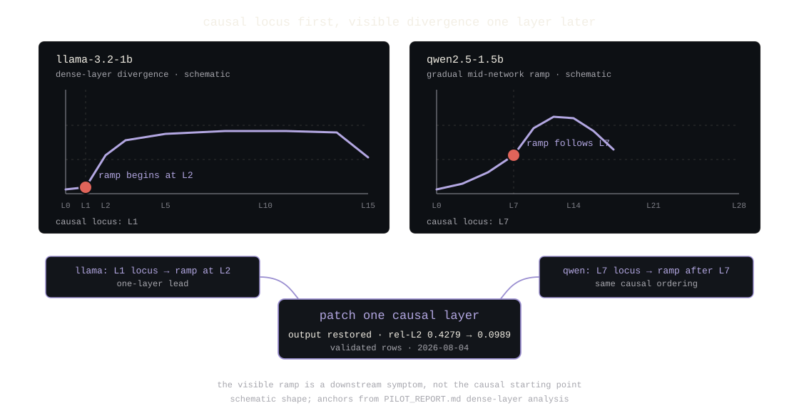
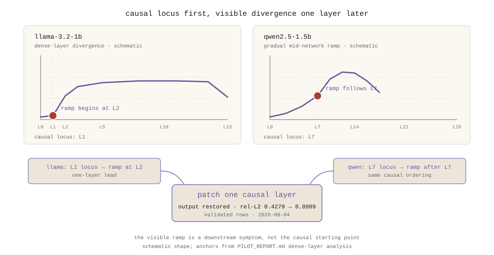

مسودة مكتملة باستشهادات صريحة. إعادة إنتاج التحديد السببي في القسم 5 شُغّلت مباشرة في
2026-08-04 ومسجّلة في artifacts/road-to-1.0/part6-null-result.md. الصفر محصور
في المصفوفة المختبرة وغير مستنسخ خارجيًا؛ والنتيجة السببية مُتحقق منها على الصفوف ذات
الفحوص golden المكتملة (عائلتا Qwen2.5-1.5B وLlama-3.2-1B). الشكل مضمّن كـ SVG (نسختا
الوضع الداكن والفاتح).
انطلقنا لإظهار أن الكمّية تدهور العربية تحديدًا. قالت البيانات لا. الأدوات اللي بنيناها للتحقق قالت شيء أنفع.
بدأ الـ pilot بسؤال مبني على ورقة: هل تدهور الكمّية منخفضة البت الصرف واللهجات العربية أكثر مما تدهور اللغات اللي ضُبطت عليها المُكمِّمات؟ قصة الآلية كانت معقولة، ترميز العربية غير مألوف، والكتابة عالية الإنتروبيا، والتمثيل المضغوط قد يفقد التمييزات الدقيقة اللي يعتمد عليها تنقيب الصرف. الفرضية، قبل التشغيلات: تدهور كمّي انتقائي للعربية عند Q4/Q6 مقابل Q8.
عائلتا نماذج، Qwen2.5-1.5B وLlama-3.2-1B، بثلاث دقات لكل منهما، Q8_0 وQ6_K وQ4_K_M، بسلم
كمّية مطابق بتجزئات متحققة وأداة من 32 عنصرًا متوازنة عبر أربع فئات: صرف عربي، لهجة
وتسجيل، تنقّل رمزي ونصي، وضوابط (إنجليزية + عربية فصحى). نحو 500 تشغيل حتمي، حرارة 0
(docs/validation.md؛ مجموعة العناصر والدرجات في دليل الـ pilot، فرع محلي، غير
منشور).
الفرضية الرئيسية لم تصمد. سلوكيًا: Q4 ما كان أسوأ من Q8 (q8 19/25، q6 20/25، q4 20/25 صحيحًا على العناصر المقيَّمة)، و30 من 32 عنصرًا أنتجت المخرجات نفسها عبر الدقات الثلاث، والفرقان كلاهما لصالح الدقة الأدنى. داخليًا: انجراف التنشيط q8-vs-q4 كان نحو 5× انجراف q8-vs-f16 وموحدًا، عناصر اللهجة داخل نطاق الضوابط، بلا تضخيم انتقائي للعربية (PILOT_REPORT.md، دليل الـ pilot).
الفرضية المدحضة مو تجربة فاشلة. الصفر كان مفيدًا بطريقتين. أزال قصة خاطئة، العربية مو هشة تحديدًا عند 4 بت في هذي المصفوفة، وأجبر السؤال اللي ممكن إجابته: حد الكمّية يكسر أحيانًا، وحيث يكسر، هل ممكننا معرفة أين وليش؟
الفشل الباقي كان نادرًا ومحددًا. عنصر صرف عربي واحد (جمع سالم، صحيح عند f16 وq6، خاطئ عند q8 على Qwen2.5-1.5B) كان الحالة المهمة: فشل حدود كمّية استعادته patch تنشيط أحادي الطبقة بالضبط، بزرع تنشيط من جلسة f16 أو q6. كان الموضع السببي الطبقة 7 من 28، طبقة واحدة قبل منحدر التباعد المرئي. انتقل النمط نفسه إلى Llama-3.2-1B: عنصر صفة-عدد فشل عند q6، وزرع q6 في تنشيط الطبقة 1 بعد mlp من q8 استعاد المخرج الصحيح، مع انهيار فجوة تباعد موضع الإجابة من rel-L2 0.4286 إلى 0.0927 (4.6×)؛ patches أحادية الطبقة عند الطبقتين 2 و4 لم تستعد. الطبقة السببية تجلس قبل المنحدر بطبقة في العائلتين (PILOT_REPORT.md).
الآلية المتسقة مع كل داك انقلاب قرب العتبة: ضجيج كمّي يعبر أصغر هامش قرار للنموذج، لا انهيار تمثيلي واسع. صنفان من الفشل لم يتحددا في طبقة واحدة، تباعد الـ token الأول (العائلتان) وعنصر ضابط واحد احتاج patch متعدد الطبقات لاستعادة جزئية، وهو لوحده حدٌّ مفيد على الادعاء.


إعادة إنتاج العرض التجريبي كانت درسًا بذاته. السكربت المثبّت من البداية إلى النهاية
(research/pilots/arabic_quantization_001/causal_demo.sh) يرقع الكمّية المتدهورة
بتنشيط المرجع الملتقط، ملفا نموذج مختلفان. في 2026-08-04 رفضه الثنائي الحالي، بإغلاق آمن،
عشان تجزئة SHA-256 لنموذج مصدر الـ patch لازم دحين أن تطابق النموذج الحالي (أُضيفت القاعدة
في 2026-08-03 في تمرير التقوية). ومراجعة الـ pilot الرئيسية انهارت على ملف llama Q6_K (خطأ
اتجاه رأس مرتبط أُصلح في اليوم نفسه اللي شُغّل فيه الـ pilot). تشغيل العرض بالمراجعة اللي
كُتب لها، في النافذة بعد إصلاح الرأس وقبل قاعدة SHA، أعاد إنتاج النتيجة:
baseline compare: differs 0 identical / 85 aligned
patched run applied (5 targets)
answer-step logits: baseline rel_l2 vs reference 0.4279 | patched 0.0989
criterion: divergence reduced 4.3x
VERDICT: RESTORED
تتبّع أرقام الإعادة أرقام الـ pilot المسجّلة تقريبًا بالضبط (0.4286 → 0.0927 مسجّل مقابل
0.4279 → 0.0989 مقاس، 4.6× مقابل 4.3×). كلا اكتشافَي الـ harness مسجّلان في
artifacts/road-to-1.0/part6-null-result.md: عقد SHA الأشد دفاعًا عنه علميًا
(الـ patch لا يكون ذا معنى إلا إذا تطابق المصدر والهدف في النموذج)، والعرض المثبّت يسبقه
بكل بساطة.
docs/validation.md والـ README.أصبح السؤال "هل تؤذي الكمّية العربية؟" "أين، بالضبط، تكسر الكمّية؟"، وإجابة السؤال الثاني تطلبت الأدوات الدقيقة اللي تصفها السلسلة هذي: التقاط بمصدر (v0.2)، تنفيذ مضغوط يُبقي الدلالات متطابقة (v0.3)، hooks تصمد أمام التحسين (v0.4)، وتجارب يقدر باحث آخر التحقق منها (v0.5). النتيجة الصفرية لم تنتج استنتاجًا بحثيًا للنشر؛ أنتجت سلسلة الأدوات اللي تجعل السؤال التالي الأفضل صياغةً قابلًا للإجابة.